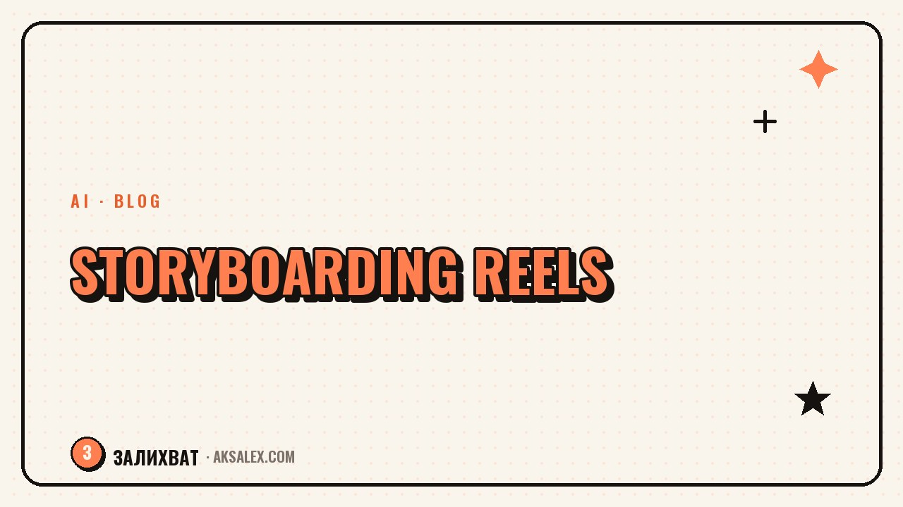

Storyboarding Reels with AI: A Guide for Bloggers

Why a Blogger Needs a Storyboard If This Isn't a Movie
A storyboard is associated with a film set and a director's chair, but for Reels it's an ordinary working list. It records what happens in each shot, what you say, and how many seconds it takes. Without such a list, filming turns into improvisation: you say the same thing over and over, lose your train of thought, and then spend half an hour hunting for the right take in your camera roll.
With a ready storyboard, you sit down in front of the camera once, run through the text point by point, and move to the next shot. Filming a 30-second video takes five to seven minutes instead of an hour, and the edit almost assembles itself, because the shots are already in the right order.
How AI Helps You Put Together a Storyboard in 15 Minutes
AI doesn't invent the meaning of the video for you, but it takes on the routine: it breaks a ready idea into shots, estimates the approximate duration, and suggests wording for the lines. All that's left for you is to describe the topic and the main point, then edit the draft to fit your speaking style.
What to Give AI as Input
- The video's topic in one phrase and the target duration in seconds
- The main point the viewer should remember
- The hook - the first phrase or action that grabs attention in the first seconds
- The format: talking head, hands-only shots, screencast, or a mix
- The call to action at the end: follow, comment, click into the profile
From this, AI assembles a rough shot list with approximate text for each. Then you strip out the stiff phrases, add your own words, and check that the lines sound the way you normally talk, not like an ad brochure.
Storyboard Structure: Shot, Framing, Text, Duration
The handiest way to keep a storyboard is as a four-column table. It fits on one phone screen, and during filming you just glide your eyes down the rows.
| Shot | What's in the frame | Text | Seconds |
|---|---|---|---|
| 1 | Close-up of the face, an expression of surprise | Do you lose an hour on storyboarding too? | 3 |
| 2 | Phone screen, notes in an app | Here's how I put together a shot plan in 15 minutes | 4 |
| 3 | Hands typing a request to AI | I describe the topic and get a draft of the shots | 6 |
| 4 | Back to the face, a calm tone | Then I edit the text to fit my voice | 5 |
| 5 | Final shot with a call to action | Save this so you don't have to hunt for the storyboard again | 3 |
Storyboarding Mistakes That Make a Video Fall Apart
- Lines too long for a single shot: the viewer can't catch the meaning in time
- Shots with no clear purpose that just repeat the previous one in meaning
- The hook thought up last, even though retention depends on it
- No pause for the transition between thoughts, which makes the edit look choppy
- Lines copied from the AI draft without adapting them to your own speech
A storyboard isn't there to make the video look staged - it's there to give you the right to one honest take.
How to Adapt a Storyboard for Different Platforms
The same script rarely fits different platforms without changes. In Reels and Shorts the viewer forgives sharp cuts and a fast pace, while longer formats need smooth transitions between thoughts and a bit more room to breathe.
Ask AI to trim a ready storyboard down to three key shots for a vertical short video, and separately to expand it into a full version with a lead-in, if you plan to publish the same story as a longer video. That way one script turns into several formats without planning from scratch again.
A Checklist Before Filming
- The hook is written as the first line and grabs attention in 1-2 seconds
- Each shot has one thought, not three at once
- The total duration matches the target for the platform
- The lines sound like your normal speech, not a reading off a page
- There's a clear final shot with a call to action
Frequently Asked Questions
How long does storyboarding with AI take in practice?
The first draft takes 10-15 minutes: describe the topic, get the shot list, and tweak the wording. After a few videos the process speeds up, because you build up ready templates for typical stories.
Do I have to follow the storyboard strictly while filming?
No, it's a plan, not a script to be recorded word for word. The storyboard holds the structure and keeps you from forgetting a shot, while the wording can be changed on the fly during filming if it sounds more natural.
Which AI should I use for storyboarding?
Any text AI with a chat will do: what matters isn't the model's name but how thoroughly you describe the topic, hook, and format of the video in your input.
Is a storyboard needed for every video or only complex ones?
For simple videos with one thought, a list of three shots on paper is enough. A full table comes in handy for videos with several scenes, location changes, or a complex storyline.
How do I know the storyboard turned out well?
If after filming the edit comes together quickly and without extra takes, and the viewer watches to the final shot with the call to action, the storyboard worked.
Enjoyed this one? Here's what to read next. How to set up YouTube SEO with AI: from the title to the subtitles that search picks up.
Read the article →not by hand